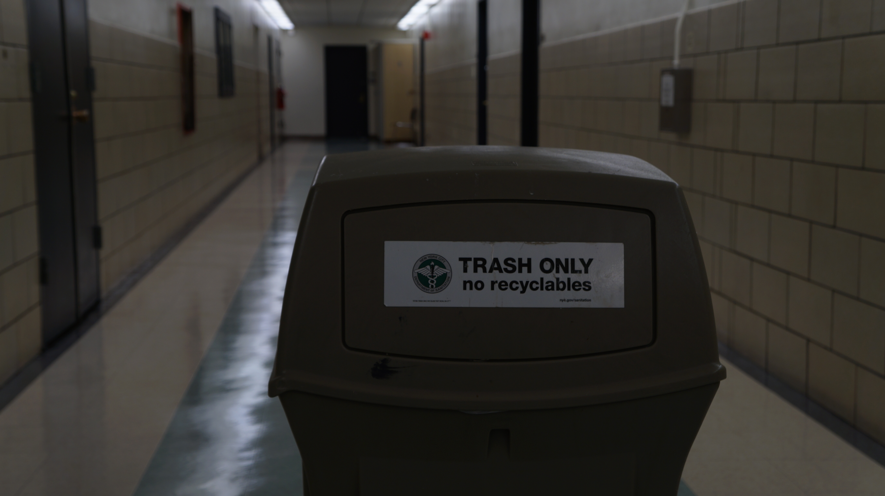
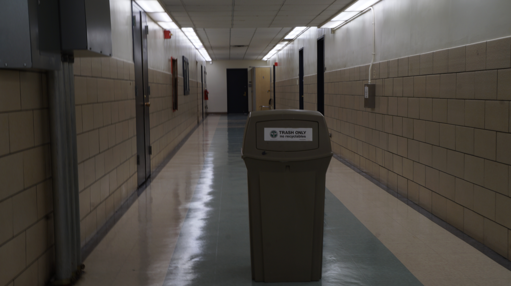
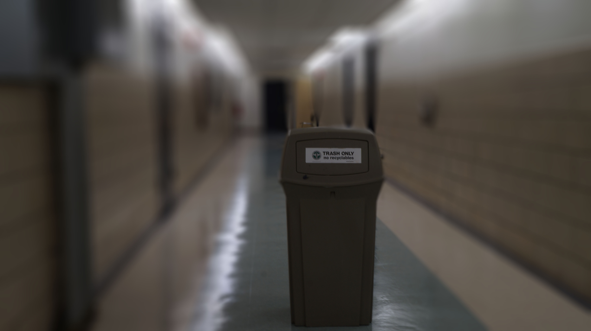
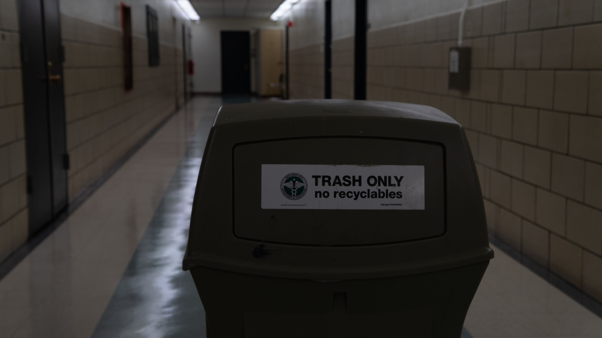
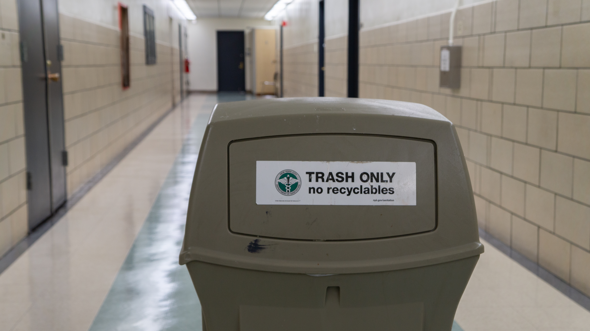
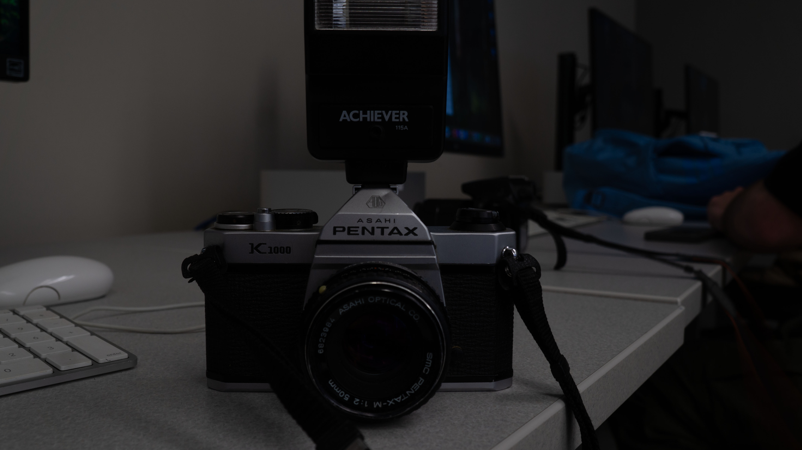
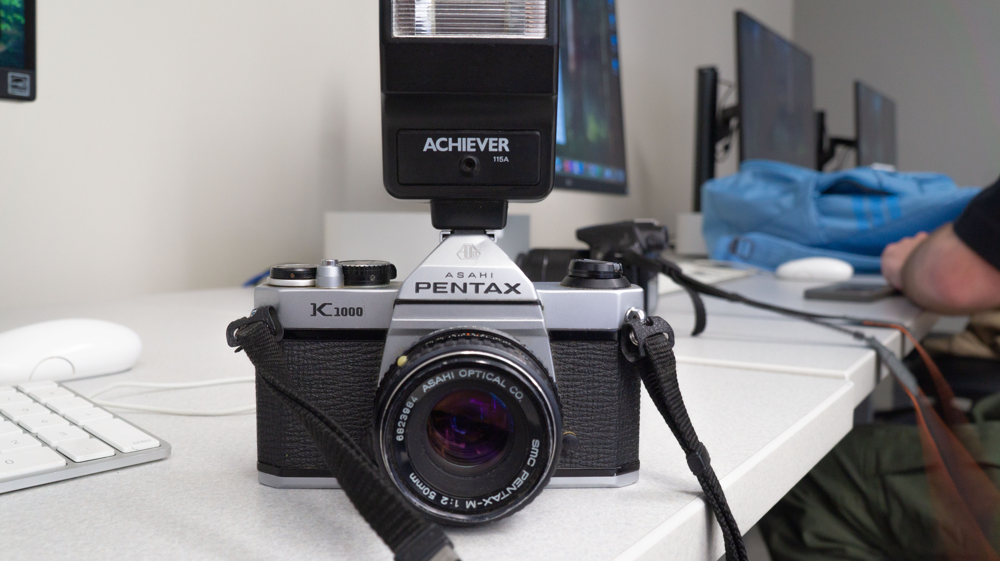

The first image is my shallow depth of field. secomd is my deep depth of field, and the third image is my blurred background photo.




Using the camera raw editor in photo shop i fixed the lighting and changed the highlights and shadows until there was no more clipping.
HOME